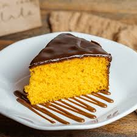

clique aqui para voltar para a pagina principal
receita do bolo de Cenoura

ingredientes:
- Farinha de trigo
- Açúcar
- Ovos
- cenoura ralada
- Oleo vegetal
- Fermento em pó
- Bicarbonato de sódio
- Sal
- Canela em pó
- Baunilha
Modo de preparo
- Preaqueça o forno a 180°C e unte uma forma.
- Bata cenoura, açúcar, óleo e ovos. Adicione farinha, fermento e sal. Asse por 30-35 minutos.
- Para a calda, misture creme de leite quente com chocolate picado.
- Despeje a calda sobre o bolo.